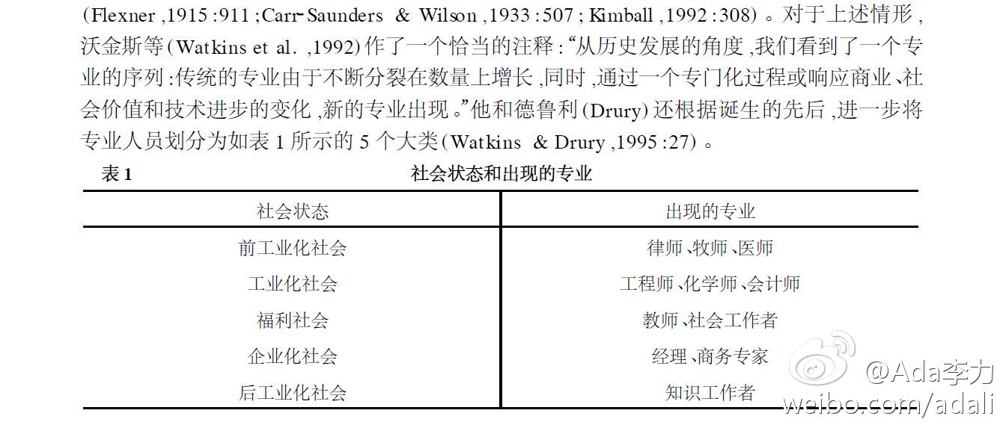

总结在博文的最后，虽然不同行业，社区运营的规律却很类似：“对于从事社区运营的人们，在玩转着传统的线上线下手法的同时，是否也需要不断探索新的运营模式，进一步细化人群的分类，分析其特点和需求特征，找准核心人物，利用个人营销带动社区的营销。”@梁颖_木水辰:今天中午的活动很有趣呢。我们分享了来自CSTO外包平台黄娜同学的‘驴’行幸福感言，在欢乐的分享中，我们深深感受到，未来将是个人营销的时代，而分享则是最好的营销手段。CSDN社区运营午餐会第1期人在驴途- ichbinwasser的专栏 - 博客频道 - CSDN.NET 网页链接 @Ada李力; @Adela可爱多
@蒋涛CSDN 粉丝分析显示您在天津有1500+粉丝，帮这个活动再宣传下呗。//@Ada李力: 五位讲师都可在微博上找到。@程辉 @田亮-云计算 @qyjohn_ 蒋清野 @lee-xh 李学辉 @Marshal-Liu 刘军卫 //@qyjohn_: 欢迎各位对开源IaaS解决方案感兴趣的同学们前来天津交流（俺可是从海南飞过来的，你们真的一点都不远@CSDN云计算:【四大开源云平台现场PK】有人说OpenStack成熟，CloudStack笑了；有人说CloudStack兼容性好，Eucalyptus笑了；有人说Eucalyptus商用好，OpenNebula笑了；有人说OpenNebula开放，OpenStack笑了。究竟选谁？本周六在天津，且听程辉 李学辉 蒋清野 刘军卫现场分享。限量报名网页链接
分享自@Ada李力 《从实习生定盒饭说说专业性》 - 这个话题里，对专业的尊重体现在哪里？让一个实习导演去订餐，是尊重他的专业了吗？提出这样的要求，就可以看出主任心目中，不认为一个实习生是专业人士，实习生就应该包揽打杂事务。 ？ - 网页链接
布朗德士(Brandeis)对专业的定义：专业是一个正式的职业，为了从事这一职业，必要的上岗训练是以智能为特质，卷入只是和某些扩充的学问。他们不同于纯粹的技能，专业主要供人从事于为他人服务而不是从业者单纯的谋生工具，因此，从业者获得经济回报不是衡量他/她职业成功的主要标准。 